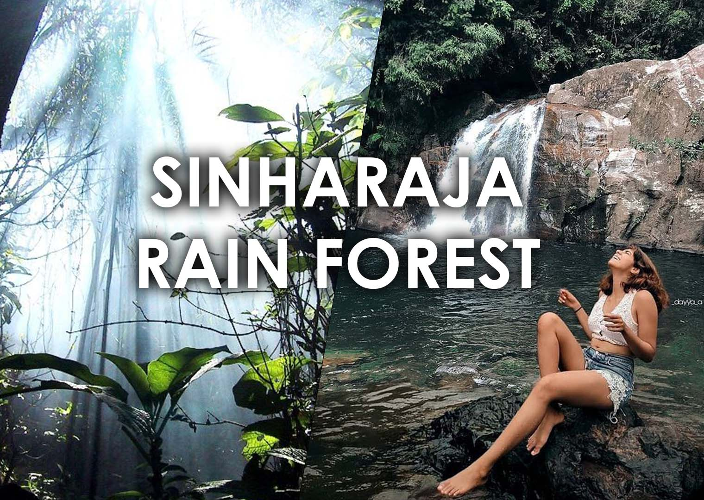
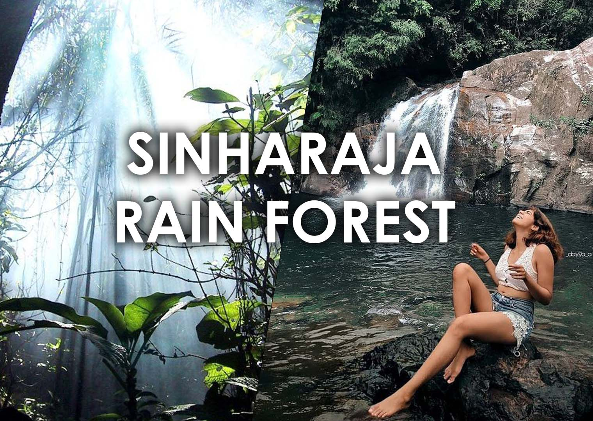

Srilankan Wildlife Introduction.
Sri Lanka's wildlife is as varied as the island itself, ranging from elephants and leopards to marine life and a vast number of different birds, and Sri Lanka is now one of the best places in the world to see whales, including the mighty blue whale.
Content.
- Introduction.
- About Species.
- Minneriya National Park.
- Sinharaja National Park.
- Endemic Species.
 
